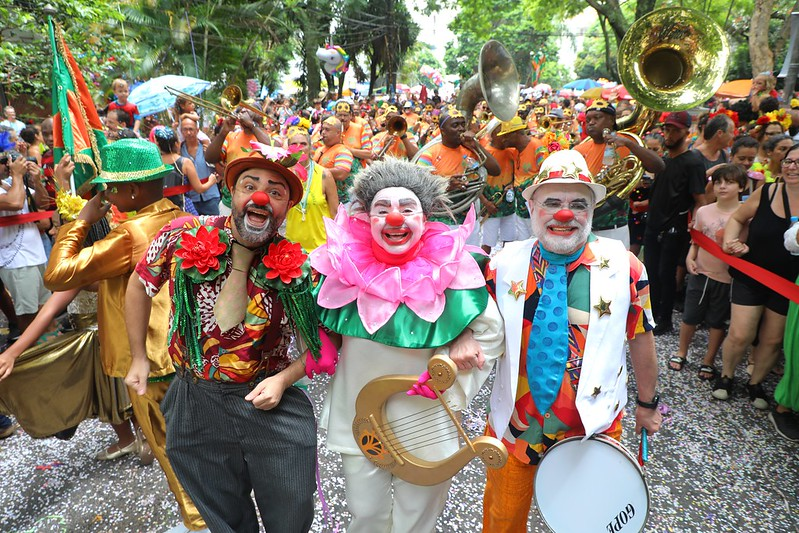
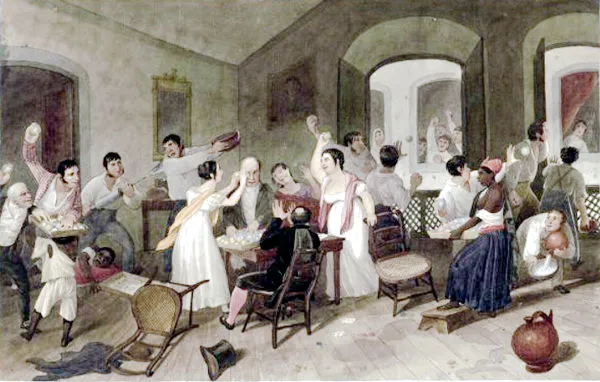

O Carnaval chegou ao Brasil durante o período colonial e manifestou-se, a princípio, por meio do entrudo. A partir do século XX, uma série de ritmos e práticas foi desenvolvida.
O Carnaval foi trazido ao Brasil pelos colonizadores portugueses entre os séculos XVI e XVII, manifestando-se inicialmente por meio do entrudo, uma brincadeira popular. Com o passar do tempo, o Carnaval foi adquirindo outras formas de se manifestar, como o baile de máscaras. O surgimento das sociedades carnavalescas contribuiu para a popularização da festa entre as camadas pobres.
A partir do século XX, a popularização da festa contribuiu para o surgimento do samba, estilo musical muito influenciado pela cultura africana, e do desfile das escolas de samba, evento que acabou sendo oficializado com apoio governamental. Nesse período, o Carnaval assumiu a sua posição de maior festa popular do Brasil.
O Carnaval chegou ao Brasil por meio da prática do entrudo, uma brincadeira muito popular em Portugal. Essa prática estabeleceu-se no Brasil, na passagem do século XVI para o XVII, e foi muito popular até o século XIX, desaparecendo do país em meados do século XX, por meio da repressão que se estabeleceu contra essa brincadeira.
O entrudo poderia ser realizado de diversas maneiras, como manifestações de zombarias públicas. A forma mais conhecida era o jogo das molhadelas, realizado alguns dias antes da Quaresma e que consistia em uma brincadeira de molhar ou sujar as pessoas que passavam pela rua. Poderia ser realizado publicamente, mas também poderia ser realizado de maneira privada.